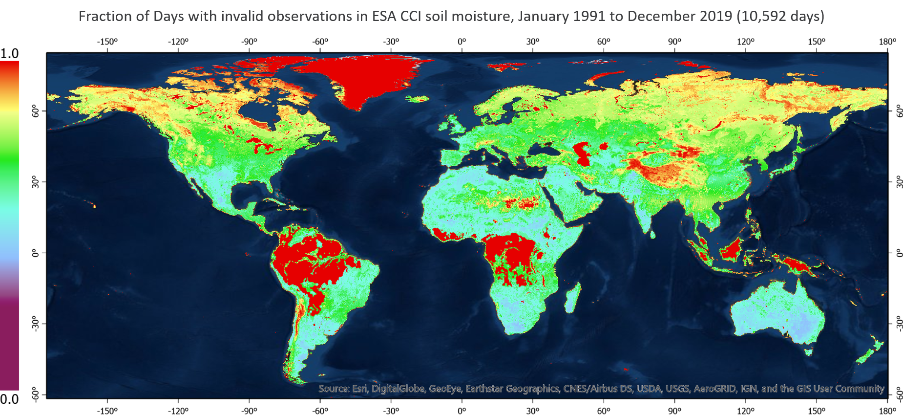

Meet the Team

Michela Taufer
Professor, University of Tennessee Knoxville

Leobardo Valera
Postdoctoral Researcher, University of Tennessee Knoxville

Ria Patel
Undergraduate Student, University of Tennessee Knoxville

Ricardo Llamas
Graduate Student, University of Delaware

Rodrigo Vargas
Professor, University of Delaware

David Icove
Professor, University of Tennessee Knoxville

Jimmy Landmesser
Collaborator